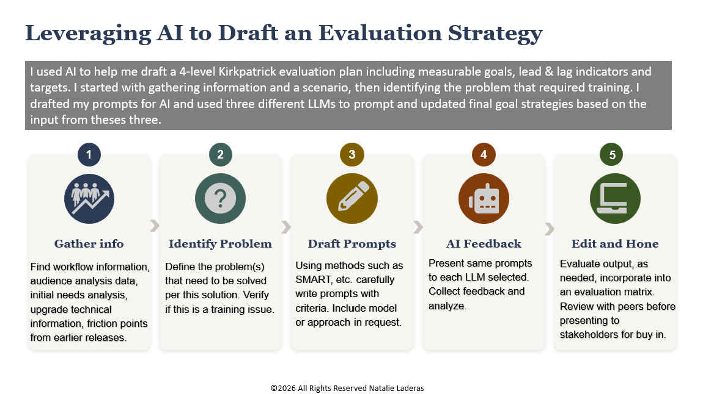
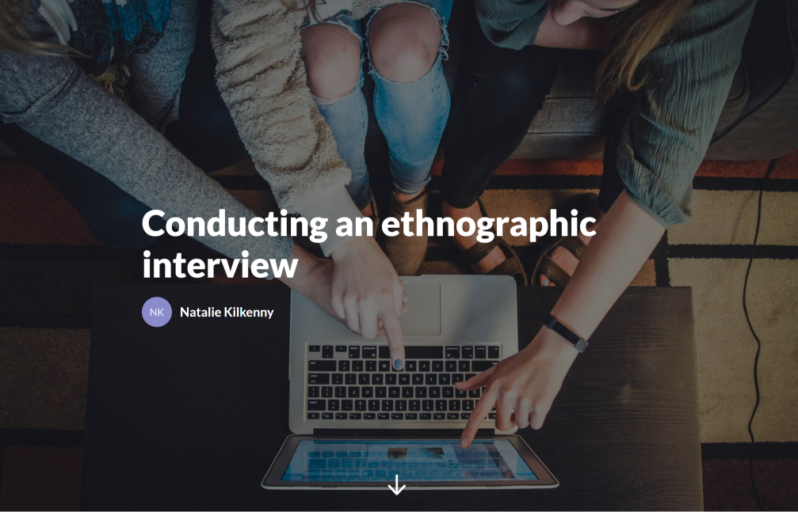
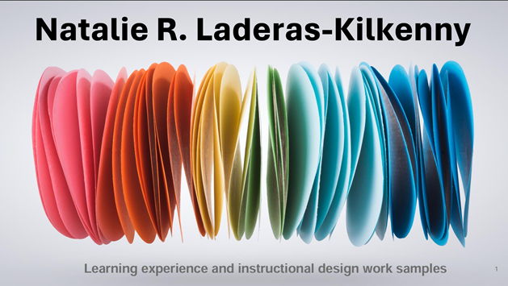

Work Samples
| Curriculum< & Storyboards | Presentations & Evaluation | Videos & Graphics |
| Using Copilot to Create an Executive Summary |
Work from 2026
Using Copilot for the Enterprise: Translating Financial Data into Executive Communication
A 4-minute micro-learning demo showcasing how to use cross-platform Microsoft Copilot to translate dense quarterly P&L data into clear, empathetic corporate communications. Designed to demystify AI tools for corporate teams, this asset demonstrates practical AI enablement and change management for complex L&D environments.
Evaluation Strategy - Kirkpatrick Levels
Strong instructional design requires grounding evaluation in measurable business and clinical outcomes, rather than relying solely on post-course satisfaction surveys. After studying Building a Culture of Evaluation, I wanted to apply its key principles to a realistic, high-stakes operational scenario: a major Epic Systems Electronic Health Record (EHR) upgrade.
To build a comprehensive, multi-tiered evaluation map, I structured a multi-LLM prompting workflow. By framing a healthcare scenario and prompting three distinct AI models, I iterated on and refined a complete 4-Level Kirkpatrick evaluation matrix—starting backward from Level 4 organizational impact down to Level 1 learner engagement.
Link - Training Evaluation Matrix Kirkpatrick Levels

Empowering the Mission - A 12 Week AI Adoption Curriculum
An interactive learning case study showcasing how to operationalize organizational values and mission statements during major digital transformations. It demonstrates how to design change-management curriculums that prioritize empathy, human connection, and mission alignment over cold, checklist-driven software adoption.
Link - Slide Deck: Empowering the Mission

Using CoPilot to Write Powerful Cross-platform Prompts
An enterprise-focused training program designed to combat user "tech anxiety" and drive software adoption by teaching a structured, six-part prompting framework across MS365 and Power Platform. Anchored in learning science, this presentation demonstrates how to design real-world practice scenarios that empower employees to utilize AI as a secure, human-in-the-loop cognitive amplifier.
Link - Slide Deck: Writing Powerful Prompts with Co-pilot

Helping Your Team Adjust to Using AI
A comprehensive, blended learning architecture and multi-stage curriculum designed to guide enterprise workforces beyond tool proficiency into strategic human agency. Built around a human-in-the-loop framework, this series addresses the enterprise change management paradox by helping employees audit daily tasks, reframe replacement anxiety, and establish actionable 30-day role redesign plans.
The included strategy deck, course outline, and Articulate Rise storyboard for Stage 1 showcases how to systematically shift focus from low-value repetition toward irreplaceable human judgment, institutional memory, and strategic alignment.
- Link - Overall Learning Series Strategy - Reskilling the Workforce for AI adoption
- Link - Course 1 Storyboard - Part A: Re-Imagining Your Role eLearning
- Link - Course 1 Faciliator Guide - Part B - Re-Imagining Your Role Live Session
Power Thinking Curriculum
Background: I developed this content for my 12-year-old niece who enjoys anime and manga. I wanted to develop a learning device that harnessed this love and interest to help develop a love of critical thinking. The purpose of this content was to develop a prototype course outline, storyboard and graphic samples for a curriculum on helping young people of middle school and high school age develop critical thinking skills in a world where it's easy to use AI to complete assignments.
Note about AI Use for this content. Some of the graphics used for this project (the chibi and kawaii anime-like graphics were developed using Gemini and Notebook LM). AI tools such as Gemini, Google Infinity, and Claude were use to brainstorm topics and provide suggestions or inspiration, but text content was written or revised directly by me.
Sample Storyboards
The first example provides a view of the introduction of the content and an overview of the course. The remaining storyboards illustrate how the modules 1-4 will appear. Ideally this content can be created in Articulate Storyline. The following storyboards share the content for the next 2 modules. Additional boards will be shared once they are finished.
- Link - Intro to Course Storyboard Version
- Link - Module 2 - Socratic Thinking Storyboard
- Link - Module 3 - Parallel Thinking Storyboard
- Link - Module 3 - Parallel Thinking Notes
- Link - Module 4 - Root Cause Analysis Storyboard
Sample Printable Content Page - Using Socratic Questions for Power Thinking
Link - Socratic Questions for Power Thinking

Work from before 2024
Articulate eLearning on Ethnographic Interviewing
Link - Use of Rise and Storyline to create eLearning

Design Examples
View a sampler of Instructional Design Work >2024, including a hybrid remote learning course that achieved a 3.89 out of 4.0 rating on a Kirkpatrick Level 2 knowledge assessment.
Link - PDF of various worksamples with explanations

AI Reflections
Link - Presentation slides summarizing what I learned about using AI in 2025